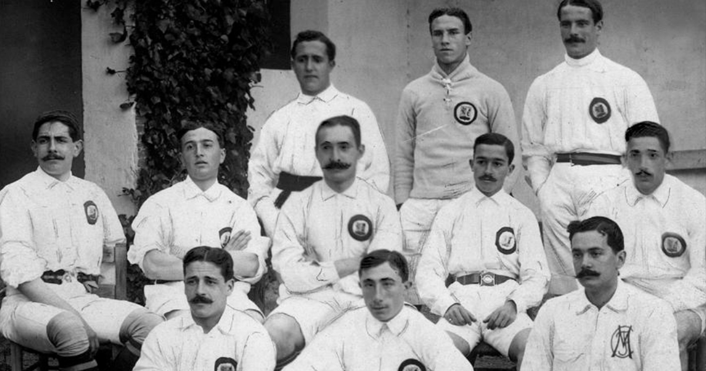
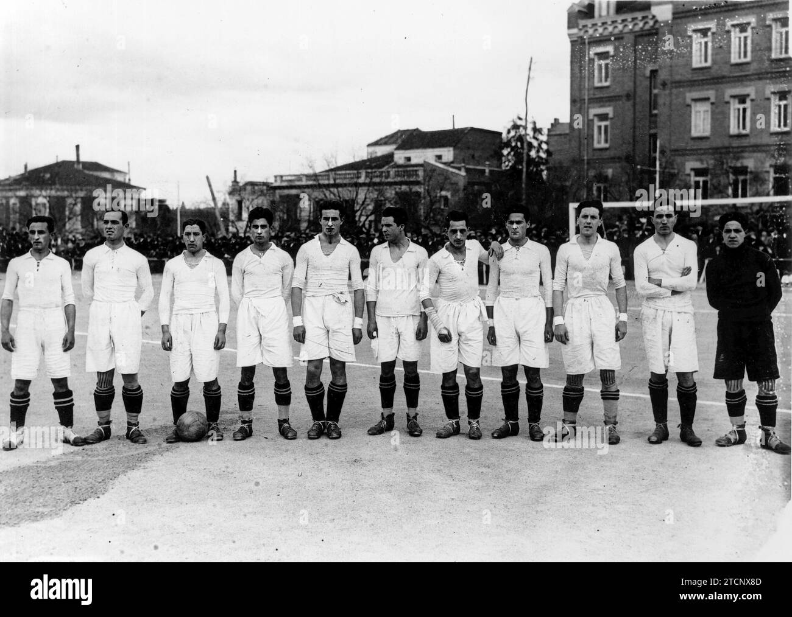
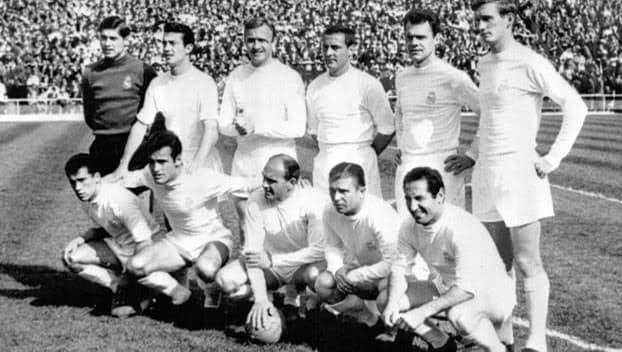
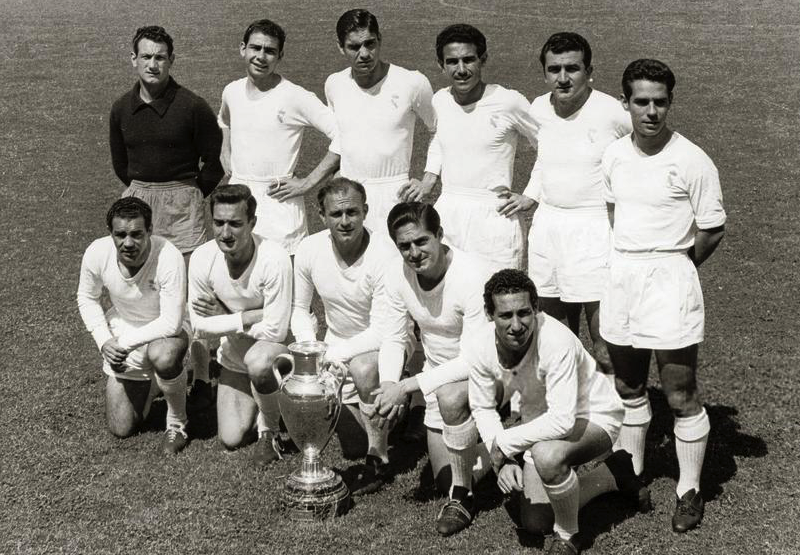
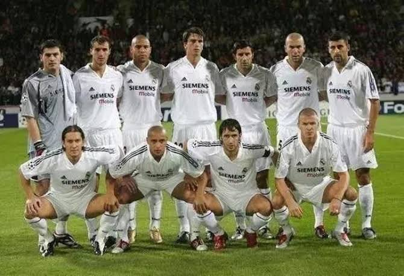
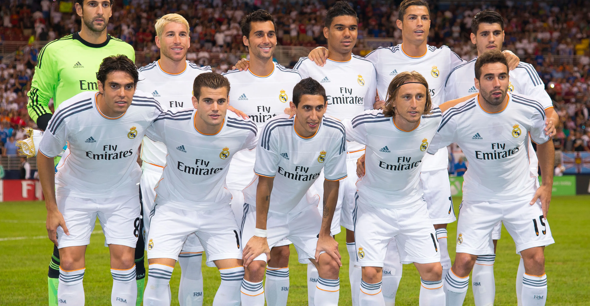
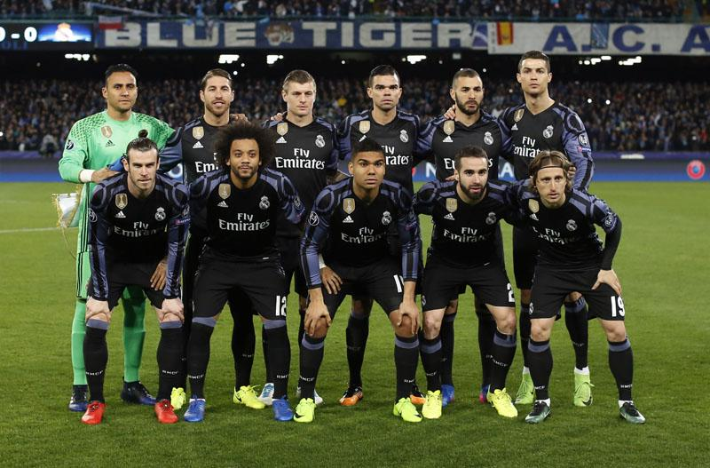
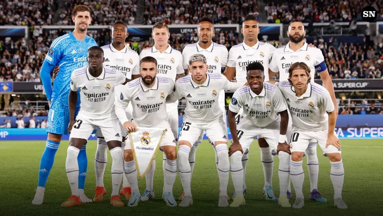

1902Alapítás
Megalakul a Madrid Football Club
1902. március 6-án hivatalosan is bejegyzik a klubot. Az első évtizedekben a madridi bajnokságban és a spanyol kupában szerez nevet.

Több mint száz év a legfontosabb fordulópontokon keresztül.
1902. március 6-án hivatalosan is bejegyzik a klubot. Az első évtizedekben a madridi bajnokságban és a spanyol kupában szerez nevet.

XIII. Alfonz király védnöksége alatt a klub felveszi a Real Madrid Club de Fútbol nevet, a címer pedig koronát kap.

1947. december 14-én avatják fel az új Chamartín stadiont, amelyet 1955-ben Santiago Bernabéu elnökről neveznek el.

Di Stéfano, Puskás és Gento csapata nyeri az első öt Európa-kupát. Az 1960-as döntőben az Eintracht Frankfurtot győzi le 7–3-ra Glasgow-ban.

Amszterdamban a Juventust, Párizsban a Valenciát, Glasgow-ban a Bayer Leverkusent győzik le. Zidane 2002-es döntőbeli gólja ma is ikonikus.

Lisszabonban az Atlético Madridot hosszabbításban 4–1-re verik. Sergio Ramos a ráadásban egyenlít, ezzel kerül hosszabbításba a döntő.

Milánóban, Cardiffban és Kijevben is a Real Madrid emeli magasba a trófeát; A BL-korszakban ez az első három egymást követő győzelem.

2022-ben Párizsban a Liverpoolt (1–0), 2024-ben a Wembley-ben a Dortmundot (2–0) győzik le. A 2023–24-es idényben a 36. bajnoki címet is megszerzik.
